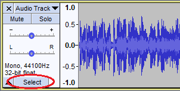
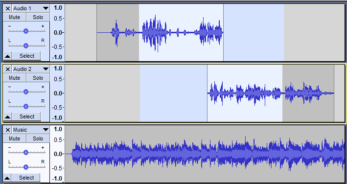
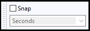
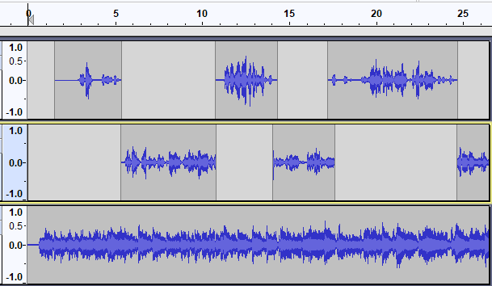
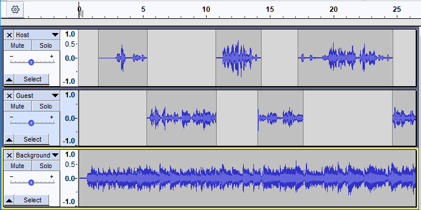
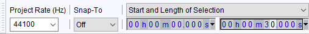
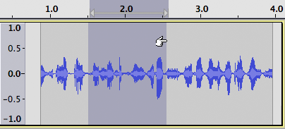
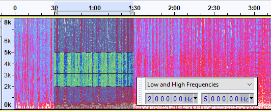

Selecting Audio
- selecting or auto-selecting the entire project, or
- mouse-selecting only a range of audio in one or more tracks, then modifying the selection's sound with an effect or deleting or moving the range of audio.
This page is the long version explaining selection. To use Audacity selections, Selecting Audio - the_basics is enough.
You can read here about selecting using only the keyboard. An exact range accurate to various selection formats (time units, samples or media frames) can be selected using Selection Toolbar.
You have advanced flexibility to select only some of multiple tracks then to select the entirety of those tracks or only a range within them. Rather than change each track the same way, you could instead select all or part of an individual track, and then change each track in a different way.
Contents
- Selecting the entire project
- Selecting the whole of an individual track
- Selecting regions using the mouse - quick and easy
- Snapping - to force-snap the cursor or selection edges to the closest or previous position of the current selection format
- Boundary Snap Guides - facilitates making a selection that starts or ends at a physical boundary
- Selecting tracks using the mouse
- Selecting using the keyboard - useful for visually- and motion-impaired users
- Selection Toolbar - mouse and keyboard users can use this to make precise selections without zooming in
- Extending or contracting an existing selection
- Menu commands for selecting
- Listening to the selection
- Label Tracks - a useful way to recall particular selections
- Spectral selection
- Focus versus selection
Selecting the entire project
You can select the entire length of all tracks on screen with or use the shortcut Ctrl + A (or ⌘ + A on a Mac).
| Select all audio, if selection required
There is a setting in Tracks Behaviors Preferences called "Select all audio, if selection required" that auto-selects the entire project (whenever you issue an editing command that depends on a selection) if you have made no explicit time selection in audio tracks. |
Selecting the whole of an individual track
The whole of an individual track can be selected by clicking in the button in the Track Control Panel to the left of a track.
Holding Ctrl (or ⌘ + A on a Mac) and clicking on the button toggles the selectedness of the track.
- 
You can also select the whole of a track by double-clicking anywhere in the track.
 Selecting regions using the mouse
Selecting regions using the mouse
The easiest way to select a region of audio is to click the left mouse button anywhere inside of an audio track, then drag (in either direction) until the other edge of your selection is made, then release the mouse.
If it is not already selected, choose the Selection tool  from Tools Toolbar, below:
from Tools Toolbar, below:

Now click the left mouse button anywhere inside of an audio track, and click and drag to the other edge of your selection, and release.
Normally, you select both the tracks and the range simultaneously, by clicking and dragging. For example, to create the selection in the image below, make sure you are using Selection Tool  , click in the track just after 7.0 seconds in the first track, then drag rightwards to 20.5 seconds as displayed on the Timeline, then downwards so that the gray selection region now includes the second track:
, click in the track just after 7.0 seconds in the first track, then drag rightwards to 20.5 seconds as displayed on the Timeline, then downwards so that the gray selection region now includes the second track:
- 
Because the drag started in the second track (as indicated by the yellow focus border) and extended up into the first track, only those two tracks are selected, as indicated by the blue color of the Track Control Panel. Therefore, any operation you perform will now only affect the selected area of the first two tracks.
This, and the method for selecting all audio are enough for using selections in Audacity.
Visual cues indicating selection
There are two visual cues in tracks to alert you to the fact that you have selections present in those tracks:
- In the above image the selected areas of the two top tracks track where audio waveform is present have their background turned white and areas where no audio waveform is present have their background turned blue where the selection exists.
- The Track Control Panel changes from white to blue when a selection is present anywhere in the track. This can be useful as the selected audio waveform may not be showing on the screen.
In contrast the third track which has no selection present has its Track Control Panel background colored white.
Mouse selection tips
Some tips:
- You can drag from left to right or from right to left, it does not matter.
- You can start your selection in one track, and end it in another track, and both tracks (plus the tracks in-between) will all end up selected.
- If you move the mouse past the left or right edge of the window while dragging, Audacity will scroll the window in that direction as long as the mouse button is down.
- Esc key aborts selection drags, and restores the previous time selection, frequency selection (see later on this page), and set of selected tracks.
- After making a selection you can modify it by going back and dragging the left or right edge.
Snapping
The Snapping Toolbar enables you to snap the cursor or selection to the nearest whole second (or other whole time formats) which can be useful for exporting a selection that needs to be a whole number of seconds (or other time unit), without entering values in the Selection Toolbar boxes (which would be another way of ensuring accuracy). Snapping is "off" by default.
- 
Boundary Snap Guides
Boundary Snap Guides make it easy to make a selection that starts or ends at a physical boundary, like a label or clip. Whenever snapping is taking place, a yellow vertical line appears to indicate the snap location.
| This is distinct from the snapping options in Snapping Toolbar which snap selection edges (or the cursor) to time units, samples or media frames. |
Selecting / deselecting tracks using the mouse
Tracks can be selected, deselecting any other tracks that are already selected, by clicking in the button in the Track Control Panel to the left of a track.
Clicking on a track's button selects the entire track. That is a very easy way to apply an effect to an entire track. If you want to quickly select the entirety of all tracks, you can choose or use the Ctrl + A shortcut.
- Holding Ctrl and clicking on the button toggles the selectedness of that track only. So if a track is not selected, Ctrl-clicking its Track Control Panel selects it, or deselects it if it is already selected.
| There is another handy way to select an entire track - just double-click inside it. If the track has more than one clip, the double-click selects just that clip. |
Adding tracks to the selection
You can also add specific tracks to the selection and remove specific tracks from the selection as follows (remember to use ⌘ on Mac instead of Ctrl):
- Ctrl modified selection: Holding Ctrl and clicking in a track's Track Control Panel will add it to the selection.
- Shift modified selection: If you select a track by clicking on its Track Control Panel and then use Shift and click in another track's Track Control Panel, all tracks between and including those two tracks will be selected.
- This gives you a way to play this selection even though no tracks are selected.
- Also you can restore selectedness of that region to any of the tracks by holding Ctrl and clicking in the track's Track Control Panel.
Selecting using the keyboard
You can modify the selection entirely using the keyboard. The currently focused track is indicated with a glowing yellow border, as you can see from the track called "Guest" in this image:
- 
To change the focused track, press Up or Down arrow. In this image, we pressed down arrow to change focus to the "Background" track:
- 
Once a track has focus, press Enter or Return to change it from being selected to not selected, or from not selected to selected.
If you only have a cursor position, but not a selection, pressing Left or Right moves the cursor to left or right respectively, giving you a new cursor position from which to start a selection.
- To create a selection starting from the cursor point, hold Shift while pressing Left or Right arrow to extend the selection leftwards or rightwards respectively from the cursor point, or to further extend the selection.
- If you extended the selection too far, hold Ctrl + Shift while pressing Left or Right arrow to contract the selection from the right or left edge respectively.
You can always use Selection Toolbar if necessary to find out if you have a selection (if there is only a cursor, the "Length" radio button will show a zero time value).
Keyboard selection tips
Some tips:
Once you have a selection, hold Shift while pressing Up or Down arrow to extend or contract the selection up or down tracks.
- Shift + Home creates a selection region from time zero in the project (on the timeline above the waveform) to the cursor point.
- Shift + End creates a selection region from the cursor point to the end of the project.
- (or shortcut Shift + J) creates a selection region in the selected tracks from the start of the leftmost audio track to the cursor point. The start of an audio track (the point where its blue waveform begins) does not have to be time zero.
- (or shortcut Shift + K) creates a selection region in the selected tracks from the cursor point to the end of the rightmost audio track.
Creating selections at an exact time
If you already know the exact times at which the selection should start and end, you can use the [ shortcut when the track is not playing, recording or paused to open the "Set Left Selection Boundary" dialog. Use the time digits to set the left-hand boundary of the selection as below. To change the Selection Format of the time units or frame boundaries, right-click (or use the keyboard Context Key) or left-click the downward-pointing triangle to right of the time digits.
- If the cursor is currently to left of where the selection should start, advance the current position of the time digits to move the cursor rightwards to the correct start position. Then use the ] shortcut to bring up the "Set Right Selection Boundary" dialog. Here you can set the time at which the selection should end, which draws the selection.
- If the cursor is currently to right of where the selection should start, use [ if necessary to advance the time digits so as to place the cursor at the intended end of the selection. Then use [ again to set the left boundary of the selection which will draw the selection from that left boundary to your chosen end position.
Exact selections can also be created directly within Selection Toolbar by similarly manipulating the time digits.
Sometimes you may want to create a new selection using the start point (left boundary) of the current selection as the new end point, or using the current end point (right boundary) as the new start point. To do this, press Left arrow to place the cursor where the beginning of the selection was, or Right arrow to place the cursor where the end of the selection was, in both cases removing the selection. Now create and adjust the new selection as above.
- Use [ or ] as above to force the cursor or selection to a position outside the current selection format, even if Snap-To is enabled.
Selection Toolbar

One handy way to keep track of what you have selected and to make very precise modifications is to use the Selection Toolbar. For our purposes here, let's concentrate on its main purpose, the Selection boxes. By changing the dropdown menu selection from "Start and End of Selection" to "Start and Length of Selection", you can display and control the length of the selection instead of the endpoint. Which one is useful for you depends on the circumstances: if you need a clip from a song that is exactly 30 seconds long, you may want to set the length to 30, and then modify the start until you have just what you want. Other times you may know the exact end time but need to figure out where to start, independent of the resulting length.
Selection Toolbar also displays and can move the cursor position without there being a region selected. To move the cursor to an exact position using Selection Toolbar, set the "Selection Start" and "End" boxes to the same value.
You can set the values displayed in the Selection Toolbar boxes using the mouse and/or keyboard. To change a particular digit in a box, click on it, or you can navigate to it using only the keyboard:
Navigating into and through the Selection Toolbar controls Key Action Ctrl + F6 Move the focus to/from Selection Toolbar Tab Move forwards through the Selection Toolbar controls Shift + Tab Move backwards through the Selection Toolbar controls Left / Right Move cursor between digits or to/from End/Length
Once you have clicked on or navigated to a digit, it will highlight in white to show it is active, as shown in the image below:
- 
You can then increase or decrease the digit's value by scrolling the mouse wheel, by using Up arrow or Down arrow or by typing a new value over the existing value. After typing a value, the cursor automatically moves to the next digit and selects it, so you can type the required values one after the other. If you type the wrong digit(s) it can be convenient to use Backspace which moves the cursor back to the previous digit and resets it to zero.
Working with the Selection Toolbar digits Key Action Up arrow Increase the highlighted digit Down arrow Decrease the highlighted digit Backspace Move back to previous digit and reset it to zero. Use the Delete or Ctrl + K shortcut to delete selected audio while Selection Toolbar has focus.
As an alternative to navigating into Selection Toolbar, you can use the [ and ] shortcuts to move the cursor or create selections or to adjust existing selections.
Selection Formats
By default,Selection Toolbar lets you enter values in units of hours, minutes and milliseconds. This is appropriate and accurate enough for most purposes. However if you need for example to make a selection that is accurate to the nearest sample or is defined in CDDA or film frames, numerous other Selection Formats are available. To choose other formats, click the triangle to right of any box. You can also select in or right-click over any digit in a box (or use a keyboard equivalent).
Extending or contracting an existing selection
Once you have a selected range you can move either edge of the selection so as to expand or contract the selected length, or you may want to expand the selection at one edge and contract it at the other so as to select a similar length in a slightly different place; Audacity offers multiple methods to facilitate this:
- Hover the mouse pointer near the edge of a selection, when you hover close enough to the edge the mouse pointer changes to a hand with pointing finger (indicating you can now click and drag the selection). Then click and drag with the mouse to move that edge of the selection.
- 
- Classic theme: selection extended, mouse pointer displaying as a hand with pointing finger.
- You can also extend or contract an existing selection by holding down the Shift key while left-clicking the mouse near one of the edges of the selection. The nearest edge of the selection will jump to the current position of the mouse pointer. This is really useful if you know exactly what you want to select but it does not easily fit on the screen at once:
- Click at one edge of the selection
- Scroll until the other edge is in view
- Shift-click to set the other edge of the selection.
- Hold Shift while pressing Left or Right to extend the selection from the left or right edge respectively.
- Hold Ctrl + Shift while pressing Left or Right to contract the selection from the right or left edge respectively.
- Use Selection Toolbar to precisely place the selection boundaries by entering their positions.
- Use the [ or ] shortcut when the track is not playing, recording or paused to open the "Set Left Selection Boundary" or "Set Right Selection Boundary" dialog respectively. Then adjust the position of the left- or right-hand selection boundary. As in Selection Toolbar, to change the Selection Format of the time units or frame boundaries, right-click (or use the keyboard Context Key) or left-click the downward-pointing triangle to right of the time digits.
| Mac users: remember to substitute the Command key for the Control key. |
Including or excluding the existing range in other tracks
You can also change which tracks are selected independently of the range, so that selecting an extra track includes the selected range in that track, and deselecting a selected track moves the selected range out of that track. This gives you complete flexibility to extend, contract or move the existing range up or down between multiple tracks.To change which tracks are selected without affecting the range, there are multiple methods.
- Hold Shift while clicking on the Track Control Panel to the left of the waveform to toggle its selectedness.
- Press Up or Down to change the focused track, then press Enter to toggle its selectedness.
- Hold Shift while pressing Up or Down arrow to extend or contract the selection up or down into adjacent tracks.
Use the first two of the above methods when you want to select or deselect non-adjacent tracks.
It is possible to have a range selected but no tracks selected. In that case, you will only see the evidence of the selected range in the Timeline.
Advanced: If you enable Sync-Locked Track Groups you do not need to explicitly select other tracks so as to maintain synchronization when inserting, removing or time-shifting audio.
Menu commands for selecting
The menu has several commands that are useful for selecting.
Please see the Select Menu page for details.
Listening to the selection
With audio, it usually is not obvious from the waveform what you want to select, so you really want to listen just to the left and right edges of a selection to make sure you are editing the correct part. Also because the purpose of multiple tracks is usually to mix them together as combined audio, by default the selected range plays for all the visible tracks, selected or not. To change this you can mute or solo individual tracks in the Track Control Panel.
But if you are new to audio editing, do not worry. For now, you can just click and drag to create a selection on a single track, and press Space to listen to all of it. Come back here for more help when you start to work on more advanced projects and are having trouble selecting what you want.
Selecting while audio is playing
Sometimes the easiest way to select an exact portion of audio is to mark the selection boundaries while you are playing (or recording) audio.
To do this, press the [ shortcut to mark the left edge of the audio, then the ] shortcut to mark the right edge and draw the selection.
After you have done that, you will definitely want to listen to the selection to make sure it was right. Press Space once to stop playback and then press Space again to hear just the selection. There are additional keyboard shortcuts that let you listen to just the beginning or end of a selection - see Special Playback Keyboard Commands for details.
Label Tracks
A useful way to retain a selection for future use is to label it. While the selection is highlighted press Ctrl + B to label the selected region. For more information see Label Tracks.
The audio defined by a region label can be quickly selected by left-clicking in the label.
Shortcuts
There are also two shortcut commands to aid navigation between labels that have no menu item or button associated with them, they exist just as shortcuts:
- Alt + Right moves the cursor to the next labeled selection (or point label)
- Alt + Left moves the cursor to the previous labeled selection (or point label)
When the final label is reached in either direction Audacity cycles around the label track.
If you have multiple label tracks then these shortcut commands work on the currently focused label track (the one with the yellow border). If there is more than one label track and none have focus, then the first label track downwards from the focused audio track is used.
| Note that this may have the effect of not having your revised selection showing on-screen as these shortcuts do not update the display accordingly. |
Spectral Selection
Spectral selection is used to make selections that include a frequency range as well as a time range on tracks in spectrogram view. Spectral selection is used with special Spectral edit effects to make changes to the frequency content of the selected audio. Among other purposes spectral selection and editing can be used for cleaning up unwanted sound, enhancing certain resonances, changing the quality of a voice or removing mouth sounds from voice work.
All of the time-based selection techniques (horizontal selection) are still available when doing spectral selection.
- 
- Example of a Spectral selection from 2kHz to 5kHz and time range 30secs to 1min30secs
- The Spectral Selection toolbar is not on by default and is floated here for the example
See Spectral Selection and Editing for more details.
Frequency range stored in a Label
If you added a label at a time region, that region's Low Frequency and High Frequency are stored in the label and are recalled when you select the label. Similarly if you added a label at the cursor position, the frequency at which you clicked to set the cursor is stored in the label.
If you subsequently want to change the Low Frequency and High Frequency stored by the label, select and right-click the label (or use the Menu key) then choose "Edit..." to open the label in Labels Editor.
Focus versus selection
You will have read the term focus several times on this page and you may be wondering what is the difference between "focus" and "Selection".
You may have noticed in the images on this page that the tracks have a yellow border around them. This border indicates that this track has focus.
The track that has focus is the track that accepts any command whose name includes "focused track". These commands include commands such as "Close focused track" (Shift + C), "Mute/Unmute focused track" (Shift + U) and "Toggle focused track" (RETURN or Enter, which toggles whether the focused track is selected or not).
| A track having focus does not necessarily mean that the current selection is in that track. It is quite possible to have a selection in one track and for another track to have the focus. |
The complete list of "focused track" commands can be seen by searching for focus in Keyboard Preferences or by viewing the description of these commands in Keyboard Shortcut Reference.